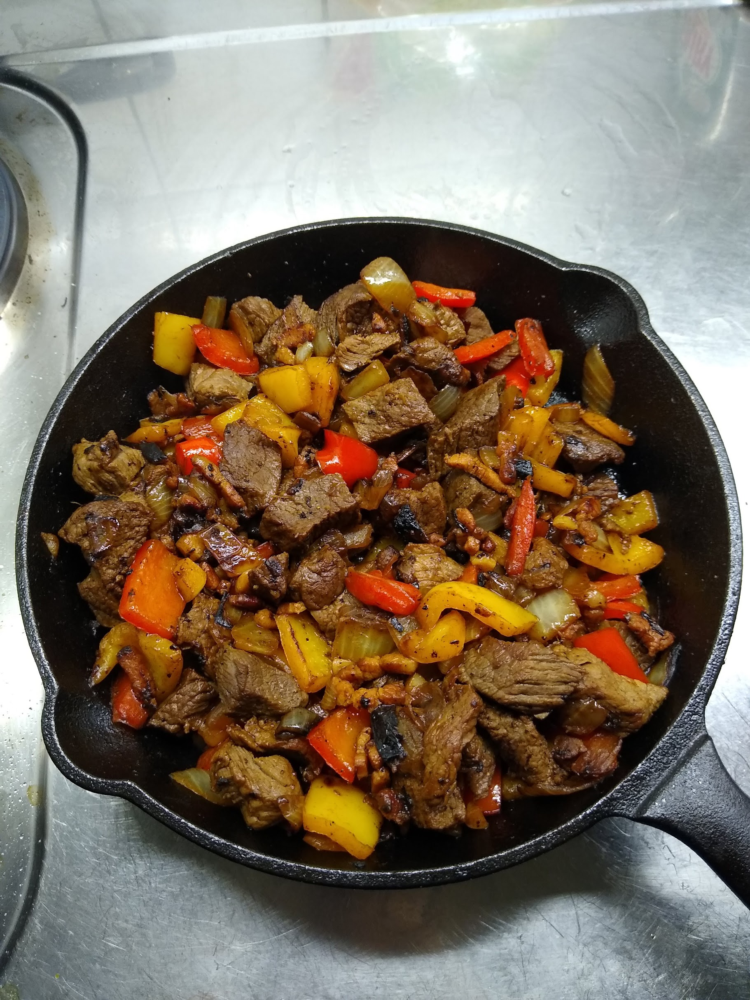

Alambre

Ingredients
| Bacon |
200 gr |
| Beef or chicken |
500 gr |
| Bells peppers |
2 or 3 pieces |
| Onion |
1 piece |
| Lime |
As desired |
| Cheese |
As desired |
| Salt and black pepper |
As desired |
Instructions
- Chop all the ingredients.
- Add the bacon to the pan and cook until its fat releases.
- Add the onion to the pan.
- Add the bell peppers and cook until they are soft.
- Withraw the ingredients from the heat.
- Add oil and cook the meat. Season with salt and pepper.
- After the meat is ready. Mix with the other cooked ingredients.
- If desired, add cheese now.
- After serving squeeze the lime on top.